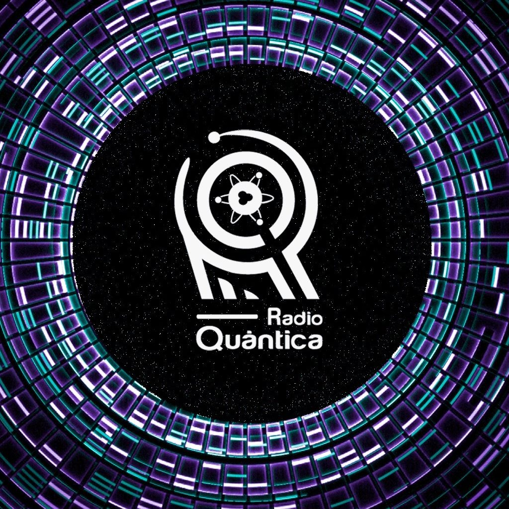

Pablo Pacheco
Estudiante de Ingeniería en Computación

Estudiante de Ingeniería en Computación
Mi nombre es Pablo Pacheco. Soy estudiante de Ingeniería en Computación en la Escuela Politécnica Nacional, una de las instituciones más prestigiosas de Ecuador. Nací en Quito, ciudad en la que crecí y donde descubrí mi pasión por la tecnología y la computación.
Desde el inicio de mi formación profesional, he sentido un interés profundo por el mundo de las redes de computadores, área que considero fundamental para el desarrollo y la conectividad en la era digital. Este interés me ha llevado a explorar con entusiasmo conceptos, herramientas y prácticas vinculadas al diseño, administración y seguridad de redes.
Además de mi enfoque académico, participo activamente en el Club de Radio de la Universidad, donde colaboro en la producción y conducción de programas al aire. Esta experiencia ha fortalecido mis habilidades en el manejo de redes sociales, así como en la creación de contenido digital, edición de audio y producción de video, ámbitos que complementan mi perfil técnico con una dimensión creativa y comunicativa.
Soy una persona comprometida, curiosa y en constante búsqueda de nuevos aprendizajes, con la firme intención de contribuir al desarrollo tecnológico de mi entorno.

Durante mi tercer semestre, participé en el proyecto Inclusión Digital, impulsado por el LudoLab (Laboratorio de Sistemas de Información e Inclusión Digital) de la Escuela Politécnica Nacional. Este proyecto busca contribuir a la integración tecnológica de grupos de atención prioritaria en Ecuador. Mi labor consistió en impartir clases tanto de manera presencial como virtual, dirigidas a estos grupos y a docentes del Ministerio de Educación. Esta experiencia me permitió desarrollar una comprensión inicial sobre la práctica docente, especialmente en contextos de inclusión digital y alfabetización tecnológica.

Soy miembro activo del Club Radio Quántica, una iniciativa universitaria con programas actualmente al aire. En este espacio colaboro en la producción y conducción de contenidos, lo que me ha permitido adquirir experiencia en áreas como el manejo de redes sociales, la creación de contenido digital, y la edición de audio y video. Esta participación ha complementado mi formación técnica con competencias creativas y comunicacionales clave en el entorno digital actual.
Contáctame para proyectos de colaboración, investigación y consultoría.